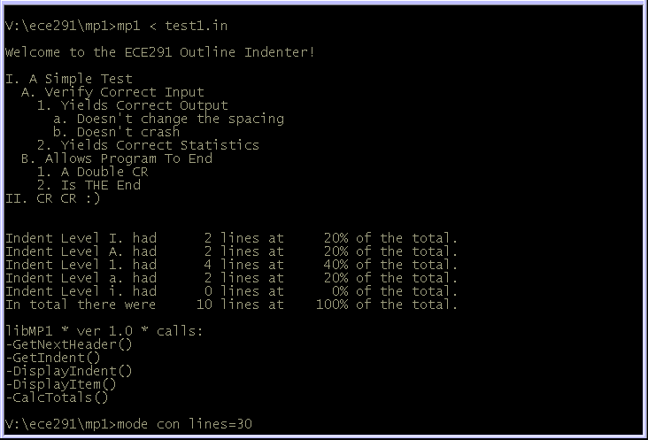

| ECE 291 |
Computer Engineering II |
Potts, Summer 2000 |
Machine Problem 1: Outline Indenter
| Assigned |
Thursday Jun 15 |
| Due Date |
Thursday Jun 22 |
| Purpose |
Learn to write assembler code. Use looping
and branching. Perform basic string and
math operations. |
| Points |
50 |
Introduction
I've heard a little rumour that Engineers like to be organized--at least
when they're working on the computer. Outlines are one method for
organizing our thoughts and ideas into a presentation. The problem is
many editors don't facilitate good habits like the proper indentation of
outlines. In this MP we will create a program that will read in an
existing outline and write a properly indented one.
Problem Description
To read through a file and decide the proper spacing of the outline, we
will follow the following steps:
- Indent the input
- Decide the indentation of the line
- Read one character from the input
- If it is a linefeed (LF)
- Ignore it by going to I.A.1
- If it is a newline (CR)
- This only occurs at a double CR
- Write a CR and LF to the output
- Exit the input stage by going to
- If it is whitespace (' ', TAB)
- Ignore it by going to I.A.1
- If it is anything else, choose the indentation by leading
character
- If it's a capital roman numeral ('I', 'V', or 'X')
set the indentation level to 0
- If it's a capital letter ('A' through 'H')
set the indentation level to 1
- If it's a Number ('0' through '9')
set the indentation level to 2
- If it's a lowercase letter ('a' through 'h')
set the indentation level to 3
- If it's a lowercase roman numeral ('i', 'v', or 'x')
set the indentation level to 4
- Write (2 * the indentation level) spaces to the output
- Copy the line
- Read one character from the input
- If it is a linefeed
- Ignore the linefeed by going to I.B.1
- If it is a newline
- Write CR and LF to the output
- Go to the next item, at I.A.1
- If it is anything else
- Write the character to the output
- Next character of input: go to I.B.1
- Summarize the outline
- Calculate statistics
- Display statistics
- Exit the program with MP1XIT
Note: Branches I.A and I.B look very similar. The prime difference is
what they do with Whitespace and Newlines.
Screen Dump
The following screen capture depicts the program as it executes. It
prints the input it received, in indented fashion:

MP1 Program Assignment
In this machine problem, the main procedure is provided for you; however,
you must write the code to replace the library routines.
You will replace these procedures from the LIBMP1
library by commenting out the statements calling the Lib routine
and adding your code. Each routine that you write
should match the output of the library code exactly. Each of the function calls and their functionality is described below in the
Subroutines section.
The best way to get a feel for the program is to run it
to see how it is supposed to operate. You can also edit the test
file to see how various changes will affect the program execution.
Your program is required to:
- Output data in the same format as the original source code
- Reformat any test cases the TAs provide
- Count the number of lines at each indentation level
- Display the number and percentage (to the nearest integer) of each
indentation level
- Run efficiently. Points will be deducted for inefficient algorithms
and/or excessive coding.
The program can be run by typing mp1 at the
command prompt. If you wish to use the test data files as input, type
mp1 < test1.in at the prompt. To output to a file and
compare the outputs type mp1 < test1.in > test1.mp and
then fc test1.mp test1.out
Hints
- The LIBMP1 file contains executable library functions for each of the
routines that you need to implement.
This allows you to run the program and understand how it works before you implement it. You can test your program with any combinations of your own
code and library functions. You will only receive credit, however, for
the routines that you implement yourself.
- You may define new variables as needed.
- You might find it very helpful to write your own helper functions.
For instance a routine to print the value of the current line to the
screen might be helpful to use in a few routines.
- Be very careful to ensure that your procedure does not destroy any
of the registers it does not specify as outputs. The calling procedure
may use them and expect them to remain unchanged.
- You may assume there will be no more than 200 lines at any given
indentation for any of the TA test files, and that all lines will be
shorter than 80 characters (including indentation).
- START EARLY! This is the first MP that requires you to write your
own program. Composition is much more difficult than comprehension.
- Monitor the newsgroup for clarifications and help.
Subroutines
This assignment has six procedures. You will receive credit by replacing
each of these seven procedures listed below with your own code.
| GetNextHeader |
- Finds and returns the first non-LF or Whitespace character
- Inputs:
- Outputs:
- AL = first character, or -1 if first character is CR
- Calls: KBDIN
- Note: You need to save the registers you alter. To do this, push them
all onto the stack in the beginning of the subroutine, and pop them all off
the stack at the end. Also, document your functions with descriptive
function headers. Look in your lab book for examples or ask a TA.
YOU WILL LOSE POINTS IF YOU DON'T WRITE CLEAR, CONCISE FUNCTION HEADERS!!!!
|
GetIndent |
- Returns the value for the Header's indent level
- keeps count of lines per that Header Level
- Inputs:
- Outputs:
- BL = Indent Level, or -1 if header character is invalid
- proper entry of IndentCount is incremented
- Calls: none
- Note: Always save your registers in every procedure from here on out. (We're not going to tell you
again!)
|
| DisplayIndent |
- Displays two spaces for every level of indent
- Inputs:
- Outputs:
- Calls: DSPOUT
|
| DisplayItem |
- Copies from input to output through (including) a CR.
- Inputs:
- AL = first character of the Item
- Outputs:
- Prints item to the output
- Calls: DSPOUT, KBDIN
- Notes:
- The first character of the Item needs to be displayed. It is
already in AL, so start by displaying it, and not taking more
input
|
| CalcTotals |
- Totals the number of lines from the input, and calculates the
percentage at each header.
- Inputs:
- Outputs:
- Updates IndentPercent, TotalLines
- Calls: none
- Notes:
- To find the percentage, the formula is
100*num/Total. Make sure you multiply by 100 first.
- Using MUL and DIV is tricky, and may not be covered until the
day before this is due. If you need help, ask a TA or someone who has
figured them out. Use qh MUL and qh DIV at the
command prompt for more information.
|
| DispTotals |
- Displays the Header and Total strings.
- Inputs:
- Arrays IndentCount, IndentPercent
- most ____String variables
- Outputs:
- Prints summary to output.
- Calls: DSPOUT, DSPMSG, BINASC
- Notes:
- The output must be formatted so all lines are properly
aligned, just like the example code does. Read the INPUT, OUTPUT lists
for BINASC carefully, and confer with a TA if you need help.
- Use the HeaderTypes array to write this as a loop.
|
Procedure
- You will begin this MP with the following files:
- MP1.ASM: Program Framework
- TEST*.IN: Database record file
- Makefile: Specifies how and when programs are assembled
and linked.
- LIBMP1.LIB: Library functions for MP1
- LIB291.LIB: General-purpose library functions
- You may copy these files from the network drive to your home directory
with the following command:
xcopy /s V:\ece291\mp1 W:\mp1
or download the files from this server as mp1.zip
- Add your code to MP1.ASM.
- Assemble and link your program by typing
nmake
This command reads Makefile then invokes MASM and LINK to build
an executable program.
- Use CodeView (CV) to find and correct program errors.
- Verify your program operation by testing the
input test file. You should alter the test file to check
different scenarios with your code.
Final Steps
- Print a copy of the MP1 grading report (MP1GR).
Double-check that your program is ready for demonstration. You need to
run through the test cases on the grading sheet, you WILL NOT be allowed
to hand-in unless you have done this step.
- Print MP1.ASM (Use GreenPrint32 to print at 4 pages/side.)
- Demonstrate your MP1.EXE to a TA or to the instructor. You may
be asked to recompile and demonstrate MP1 with different input files.
Your program must work with all given input.
- Be prepared to answer questions about any aspect of the operation of
your program. The TAs will not accept an MP if you cannot fully explain
the operation of your code and details of your implementation. Delayed
MPs will be subject to late penalties as described in the course
syllabus (10pts/day).
- The TA will copy your program to the demonstration disk.
- Take your printouts to the same TA which approved your demonstration.
Staple the grading sheet to the front of the MP1.ASM printout. Be sure
that your name appears in your code and on the grading sheet.
MP1.ASM (program framework)
TITLE MP1 Your_Name Todays_Date
COMMENT %
*This MP will take you through the process of writing your own code,
*using loops and branches, and performing simple arithmetic.
*Better yet, at the end you can indent your own outlines!
*(well, some of them, anyway)
%
;====== SECTION 1: Define constants =======================================
CR EQU 0Dh
LF EQU 0Ah
BEL EQU 07h
TAB EQU 09h
;====== SECTION 2: Declare external procedures ============================
; Functions in LIB291.LIB
; These functions are free to be used by you.
EXTRN dspmsg:NEAR, rrest:NEAR, rsave:NEAR
EXTRN dspout:NEAR, kbdin:NEAR, binasc:NEAR
; Complete descriptions of the LIB291 functions can be
; found in your lab manuals. Use these functions for
; displaying output on the screen.
; Functions from LIBMP1.LIB
; You will need to write these functions for this program
; Comment out the EXTRN declaration when you write your own version.
EXTRN GetNextHeader:NEAR
EXTRN GetIndent:NEAR
EXTRN DisplayIndent:NEAR
EXTRN DisplayItem:NEAR
EXTRN CalcTotals:NEAR
EXTRN DispTotals:NEAR
; Exit function:
EXTRN MP1XIT:NEAR ; Terminates program
;====== SECTION 3: Define stack segment ===================================
STKSEG SEGMENT STACK ; *** STACK SEGMENT ***
db 64 dup ('STACK ')
STKSEG ENDS
;====== SECTION 4: Define code segment ====================================
CSEG SEGMENT PUBLIC 'code' ; *** CODE SEGMENT ***
ASSUME cs:cseg, ds:cseg, ss:stkseg, es:nothing
;====== SECTION 5: Declare variables for main procedure ===================
WelcomeString db CR,LF,'Welcome to the ECE291 Outline Indenter!'
db CR,LF,CR,LF,'$'
TotalLines dw ?
IndentCount db 5 dup (0)
IndentPercent db 5 dup (0)
IndentString db CR,LF,'Indent Level ', '$'
HadString db '. had ', '$'
TotalString db CR,LF,'In total there were ', '$'
LinesString db ' lines at ', '$'
PercentString db '% of the total.', '$'
HeaderTypes db 'I','A','1','a','i'
pbuf db 7 dup (?)
; Export variables to library procedures
PUBLIC TotalLines, IndentCount, IndentPercent, pbuf, HeaderTypes, MAIN
PUBLIC IndentString, HadString, TotalString, LinesString, PercentString
;====== SECTION 6: Main procedure =========================================
MAIN PROC FAR
mov ax, cseg ; Initialize Default Segment register
mov ds, ax
mov dx, offset WelcomeString
call DSPMSG
InputLoop:
call GetNextHeader ; Get next header character
cmp al, -1 ; or -1 if End of File
je InputFinished
call GetIndent ; Get indent level by Header character
cmp bl, -1 ; or -1 if Invalid Header character
je InvalidIndent
call DisplayIndent ; Display Spaces for IndentLevel
call DisplayItem ; Display the Item, including char in al
jmp InputLoop
InvalidIndent:
mov dl, BEL ; ring the error bell
call DSPOUT
jmp InputLoop
InputFinished:
call CalcTotals ; Calculate Total Percentages
call DispTotals ; Display linecounts and percentages
call MP1XIT ; Exit MP1
MAIN ENDP
;====== SECTION 7: Your Code Here =========================================
; Declare your functions in this section. Make sure to comment
; out the EXTRN declaration above when you do so.
; One example declaration is given, commented out.
;;;
;;; GetNextHeader
;;;
;;; INPUT: None
;;; OUTPUT: AL = first non-space character of header
;;; or -1 if first non-space character is CR
;;; PURPOSE: Reads characters, ignoring WhiteSpace to find the first header
;;; character
;;;
;GetNextHeader PROC NEAR
; ;Your Code Here
;GetNextHeader ENDP
CSEG ENDS
END MAIN